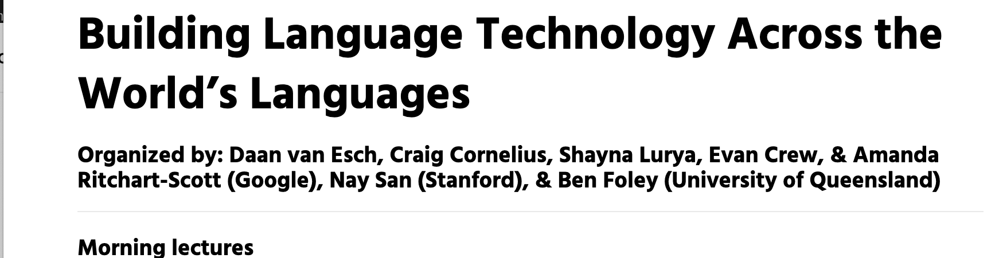

排版样例
嵌入图片
将图片放到 docs/img 文件夹下。然后在 md 文件中:

就会得到
 图为某某某某...
要注意: 路径是相对的。比如在
docs/nested/test.md，同一个图片则要用
嵌入音频
播放器
<audio controls src="<音频网址>">你的浏览器不支持播放音频</audio>
点击文字播放
-
为需要播放音频的文字添加一个链接。链接的地址格式是
#!标识符，比如#!audio01。这个标识符每个页面内的不同音频必须不一样（在不同页面可以重复）。这个熟语是[这样念的 ▶️](#!audio01)
-
在 md 文件的最后面，加入如下代码:
比如:<script> var audioUrls = { "标识符1": "音频网址1", "标识符2": "音频网址2", } </script>
<script> var audioUrls = { "audio01": "http://idioms.mindong.asia/assets/audio/2ae5b3ac-0408-4028-a9a0-5b642a219a56.mp3", } </script>
那么你便能得到：
这个熟语是这样念的 ▶️
嵌入视频
一般视频网站会提供嵌入代码。直接贴入。
表格
可以使用 Markdown 表格生成器